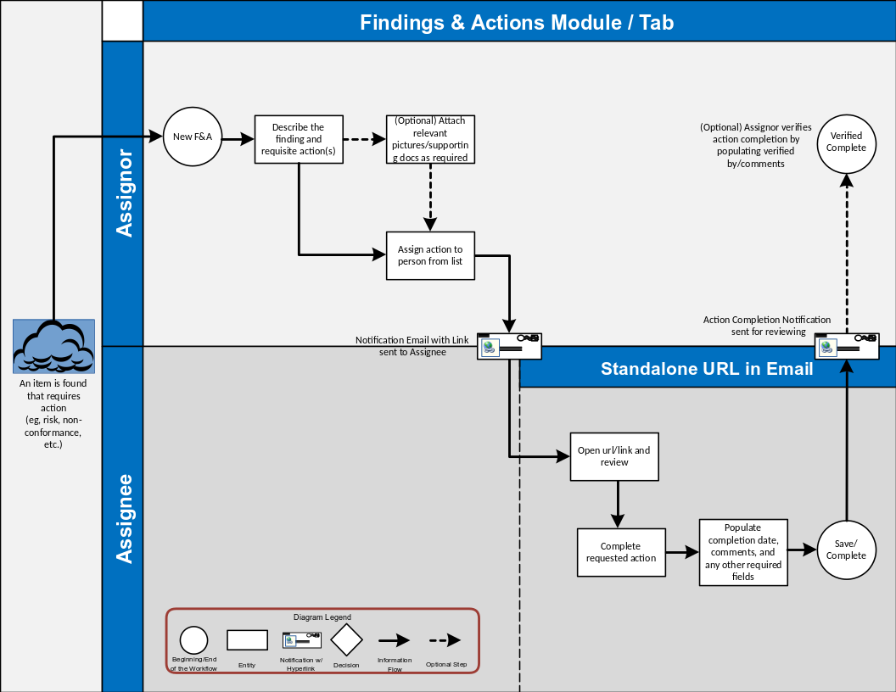

Findings, and the corrective or preventive actions assigned to them, can be identified for records in modules throughout Cority.
Within each Cloud’s menu is a link to view all Findings and Actions (“Corrective Actions” in the Environmental and Emissions Inventory menus) related to records within that Cloud, but you can change the view to see all findings and actions from all Clouds. Each entry in the list identifies the source module, finding type and details, action type and details, person responsible, due date, and completion date.
There is an optional view to include risk-related information; however, this information will only appear if the related tables (HazardSeverityRating, (Probability, and RiskDefinition) are tagged for Incident Finding assessment type. For information about how risk is calculated, see Working with Risk Assessment Results.
Some findings are automatically created depending on selections in particular fields in a module record, or based on responses to a questionnaire associated with the audit or inspection (as long as no finding record with that same action exists already). These are identified by text in the Finding Details field that include the source table and the value that prompted the finding. For example: “Auto-created from Corrective Plan: Laceration (10)”, or “Auto-created from Questionnaire: Fire Audit: Do you have a fire extinguisher?: No”. You can also click on the Source ID in the finding/action record to go to the record that created the finding/action.
You can record a new finding (and its actions) either from the Findings and Actions tab in the module record, or from the Cloud’s list view (see Recording a New Finding).
Findings and actions may be imported into Cority using the Import Utility (see Importing Text or XML Files into Cority Tables).
Group similar findings and actions together in an action plan, and track the overall completion progress of the plan (see Creating an Action Plan).
Employees can complete their assigned actions either directly in Cority or via a standalone web page accessed by a link in the email notification sent when the action is created.
To see the look-up tables used by this module and the reports available, see Look-up Tables Used by This Module. There may also be system settings that affect your use of this module; for more information, see Changing Your System Settings.
The following diagram illustrates the findings and actions workflow:
